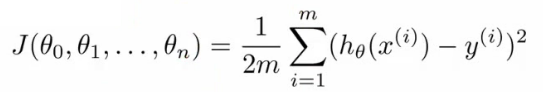

New version of linear regression with multiple features
- Multiple variables = multiple features
- In original version we had
- X = house size, use this to predict
- y = house price
- If in a new scheme we have more variables (such as number of bedrooms, number floors, age of the home)
- x1, x2, x3, x4 are the four features
- x1 - size (feet squared)
- x2 - Number of bedrooms
- x3 - Number of floors
- x4 - Age of home (years)
- y is the output variable (price)
- x1, x2, x3, x4 are the four features
- More notation
- n
- number of features (n = 4)
- m
- number of examples (i.e. number of rows in a table)
- xi
- vector of the input for an example (so a vector of the four parameters for the ith input example)
- i is an index into the training set
- So
- x is an n-dimensional feature vector
- x3 is, for example, the 3rd house, and contains the four features associated with that house
- xji
- The value of feature j in the ith training example
- So
- x23 is, for example, the number of bedrooms in the third house
- n
- Now we have multiple features
- What is the form of our hypothesis?
- Previously our hypothesis took the form;
- hθ(x) = θ0 + θ1x
- Here we have two parameters (theta 1 and theta 2) determined by our cost function
- One variable x
- hθ(x) = θ0 + θ1x
- Now we have multiple features
- hθ(x) = θ0 + θ1x1 + θ2x2 + θ3x3 + θ4x4
- For example
- hθ(x) = 80 + 0.1x1 + 0.01x2 + 3x3 - 2x4
- An example of a hypothesis which is trying to predict the price of a house
- Parameters are still determined through a cost function
- hθ(x) = 80 + 0.1x1 + 0.01x2 + 3x3 - 2x4
- For convenience of notation, x0 = 1
- For every example i you have an additional 0th feature for each example
- So now your feature vector is n + 1 dimensional feature vector indexed from 0
- This is a column vector called x
- Each example has a column vector associated with it
- So let's say we have a new example called "X"
- Parameters are also in a 0 indexed n+1 dimensional vector
- This is also a column vector called θ
- This vector is the same for each example
- Considering this, hypothesis can be written
- hθ(x) = θ0x0 + θ1x1 + θ2x2 + θ3x3 + θ4x4
- If we do
- hθ(x) =θT X
- θT is an [1 x n+1] matrix
- In other words, because θ is a column vector, the transposition operation transforms it into a row vector
- So before
- θ was a matrix [n + 1 x 1]
- Now
- θT is a matrix [1 x n+1]
- Which means the inner dimensions of θT and X match, so they can be multiplied together as
- [1 x n+1] * [n+1 x 1]
- = hθ(x)
- So, in other words, the transpose of our parameter vector * an input example X gives you a predicted hypothesis which is [1 x 1] dimensions (i.e. a single value)
- This x0 = 1 lets us write this like this
- hθ(x) =θT X
- This is an example of multivariate linear regression
Gradient descent for multiple variables
- Fitting parameters for the hypothesis with gradient descent
- Parameters are θ0 to θn
- Instead of thinking about this as n separate values, think about the parameters as a single vector (θ)
- Where θ is n+1 dimensional
- Our cost function is

- Similarly, instead of thinking of J as a function of the n+1 numbers, J() is just a function of the parameter vector
- J(θ)
- Gradient descent

- Once again, this is
- θj = θj - learning rate (α) times the partial derivative of J(θ) with respect to θJ(...)
- We do this through a simultaneous update of every θj value
- Implementing this algorithm
- When n = 1

- Above, we have slightly different update rules for θ0 and θ1
- Actually they're the same, except the end has a previously undefined x0(i) as 1, so wasn't shown
- We now have an almost identical rule for multivariate gradient descent

- What's going on here?
- We're doing this for each j (0 until n) as a simultaneous update (like when n = 1)
- So, we re-set θj to
- θj minus the learning rate (α) times the partial derivative of of the θ vector with respect to θj
- In non-calculus words, this means that we do
- Learning rate
- Times 1/m (makes the maths easier)
- Times the sum of
- The hypothesis taking in the variable vector, minus the actual value, times the j-th value in that variable vector for EACH example
- It's important to remember that

- These algorithm are highly similar
Gradient Decent in practice: 1 Feature Scaling
- Having covered the theory, we now move on to learn about some of the practical tricks
- Feature scaling
- If you have a problem with multiple features
- You should make sure those features have a similar scale
- Means gradient descent will converge more quickly
- e.g.
- x1 = size (0 - 2000 feet)
- x2 = number of bedrooms (1-5)
- Means the contours generated if we plot θ1 vs. θ2 give a very tall and thin shape due to the huge range difference
- Running gradient descent on this kind of cost function can take a long time to find the global minimum

- Pathological input to gradient descent
- So we need to rescale this input so it's more effective
- So, if you define each value from x1 and x2 by dividing by the max for each feature
- Contours become more like circles (as scaled between 0 and 1)
- May want to get everything into -1 to +1 range (approximately)
- Want to avoid large ranges, small ranges or very different ranges from one another
- Rule a thumb regarding acceptable ranges
- -3 to +3 is generally fine - any bigger bad
- -1/3 to +1/3 is ok - any smaller bad
- Can do mean normalization
- Take a feature xi
- Replace it by (xi - mean)/max
- So your values all have an average of about 0

- Instead of max can also use standard deviation
Learning Rate α
- Focus on the learning rate (α)
- Topics
- Update rule
- Debugging
- How to chose α
- Plot min J(θ) vs. no of iterations
- (i.e. plotting J(θ) over the course of gradient descent
- If gradient descent is working then J(θ) should decrease after every iteration
- Can also show if you're not making huge gains after a certain number
- Can apply heuristics to reduce number of iterations if need be
- If, for example, after 1000 iterations you reduce the parameters by nearly nothing you could chose to only run 1000 iterations in the future
- Make sure you don't accidentally hard-code thresholds like this in and then forget about why they're their though!

- Number of iterations varies a lot
- 30 iterations
- 3000 iterations
- 3000 000 iterations
- Very hard to tel in advance how many iterations will be needed
- Can often make a guess based a plot like this after the first 100 or so iterations
- Automatic convergence tests
- Check if J(θ) changes by a small threshold or less
- Choosing this threshold is hard
- So often easier to check for a straight line
- Why? - Because we're seeing the straightness in the context of the whole algorithm
- Could you design an automatic checker which calculates a threshold based on the systems preceding progress?
- Check if J(θ) changes by a small threshold or less
- Checking its working
- If you plot J(θ) vs iterations and see the value is increasing - means you probably need a smaller α
- Cause is because your minimizing a function which looks like this
- If you plot J(θ) vs iterations and see the value is increasing - means you probably need a smaller α

- But you overshoot, so reduce learning rate so you actually reach the minimum (green line)

- So, use a smaller α
- Number of iterations varies a lot
- Another problem might be if J(θ) looks like a series of waves
- Here again, you need a smaller α
- However
- If α is small enough, J(θ) will decrease on every iteration
- BUT, if α is too small then rate is too slow
- A less steep incline is indicative of a slow convergence, because we're decreasing by less on each iteration than a steeper slope
- Typically
- Try a range of alpha values
- Plot J(θ) vs number of iterations for each version of alpha
- Go for roughly threefold increases
- 0.001, 0.003, 0.01, 0.03. 0.1, 0.3
Features and polynomial regression
- Choice of features and how you can get different learning algorithms by choosing appropriate features
- Polynomial regression for non-linear function
- Example
- House price prediction
- Two features
- Frontage - width of the plot of land along road (x1)
- Depth - depth away from road (x2)
- Two features
- You don't have to use just two features
- Can create new features
- Might decide that an important feature is the land area
- So, create a new feature = frontage * depth (x3)
- h(x) = θ0 + θ1x3
- Area is a better indicator
- Often, by defining new features you may get a better model
- House price prediction
- Polynomial regression
- May fit the data better
- θ0 + θ1x + θ2x2 e.g. here we have a quadratic function
- For housing data could use a quadratic function
- But may not fit the data so well - inflection point means housing prices decrease when size gets really big
- So instead must use a cubic function

- How do we fit the model to this data
- To map our old linear hypothesis and cost functions to these polynomial descriptions the easy thing to do is set
- x1 = x
- x2 = x2
- x3 = x3
- By selecting the features like this and applying the linear regression algorithms you can do polynomial linear regression
- Remember, feature scaling becomes even more important here
- To map our old linear hypothesis and cost functions to these polynomial descriptions the easy thing to do is set
- Instead of a conventional polynomial you could do variable ^(1/something) - i.e. square root, cubed root etc
- Lots of features - later look at developing an algorithm to chose the best features
Normal equation
- For some linear regression problems the normal equation provides a better solution
- So far we've been using gradient descent
- Iterative algorithm which takes steps to converse
- Normal equation solves θ analytically
- Solve for the optimum value of theta
- Has some advantages and disadvantages
How does it work?
- Simplified cost function
- J(θ) = aθ2 + bθ + c
- θ is just a real number, not a vector
- Cost function is a quadratic function
- How do you minimize this?
- Do

- Take derivative of J(θ) with respect to θ
- Set that derivative equal to 0
- Allows you to solve for the value of θ which minimizes J(θ)
- Do
- J(θ) = aθ2 + bθ + c
- In our more complex problems;
- Here θ is an n+1 dimensional vector of real numbers
- Cost function is a function of the vector value
- How do we minimize this function
- Take the partial derivative of J(θ) with respect θj and set to 0 for every j
- Do that and solve for θ0 to θn
- This would give the values of θ which minimize J(θ)
- How do we minimize this function
- If you work through the calculus and the solution, the derivation is pretty complex
- Not going to go through here
- Instead, what do you need to know to implement this process
Example of normal equation

- Here
- m = 4
- n = 4
- To implement the normal equation
- Take examples
- Add an extra column (x0 feature)
- Construct a matrix (X - the design matrix) which contains all the training data features in an [m x n+1] matrix
- Do something similar for y
- Construct a column vector y vector [m x 1] matrix
- Using the following equation (X transpose * X) inverse times X transpose y


- If you compute this, you get the value of theta which minimize the cost function
- Have m training examples and n features
- The design matrix (X)
- Each training example is a n+1 dimensional feature column vector
- X is constructed by taking each training example, determining its transpose (i.e. column -> row) and using it for a row in the design A
- This creates an [m x (n+1)] matrix

- Vector y
- Used by taking all the y values into a column vector

- What is this equation?!
- (XT * X)-1
- What is this --> the inverse of the matrix (XT * X)
- i.e. A = XT X
- A-1 = (XT X)-1
- What is this --> the inverse of the matrix (XT * X)
- In octave and MATLAB you could do;
pinv(X'*x)*x'*y- X' is the notation for X transpose
- pinv is a function for the inverse of a matrix
- In a previous lecture discussed feature scaling
- If you're using the normal equation then no need for feature scaling
- Gradient descent
- Need to chose learning rate
- Needs many iterations - could make it slower
- Works well even when n is massive (millions)
- Better suited to big data
- What is a big n though
- 100 or even a 1000 is still (relativity) small
- If n is 10 000 then look at using gradient descent
- Normal equation
- No need to chose a learning rate
- No need to iterate, check for convergence etc.
- Normal equation needs to compute (XT X)-1
- This is the inverse of an n x n matrix
- With most implementations computing a matrix inverse grows by O(n3 )
- So not great
- Slow of n is large
- Can be much slower
- Gradient descent
Normal equation and non-invertibility
- Advanced concept
- Often asked about, but quite advanced, perhaps optional material
- Phenomenon worth understanding, but not probably necessary
- When computing (XT X)-1 * XT * y)
- What if (XT X) is non-invertible (singular/degenerate)
- Only some matrices are invertible
- This should be quite a rare problem
- Octave can invert matrices using
- pinv (pseudo inverse)
- This gets the right value even if (XT X) is non-invertible
- inv (inverse)
- pinv (pseudo inverse)
- Octave can invert matrices using
- What does it mean for (XT X) to be non-invertible
- Normally two common causes
- Redundant features in learning model
- e.g.
- x1 = size in feet
- x2 = size in meters squared
- e.g.
- Too many features
- e.g. m <= n (m is much larger than n)
- m = 10
- n = 100
- Trying to fit 101 parameters from 10 training examples
- Sometimes work, but not always a good idea
- Not enough data
- Later look at why this may be too little data
- To solve this we
- Delete features
- Use regularization (let's you use lots of features for a small training set)
- e.g. m <= n (m is much larger than n)
- Redundant features in learning model
- Normally two common causes
- If you find (XT X) to be non-invertible
- Look at features --> are features linearly dependent?
- So just delete one, will solve problem
- Look at features --> are features linearly dependent?
- What if (XT X) is non-invertible (singular/degenerate)